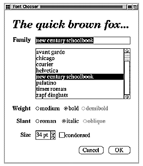
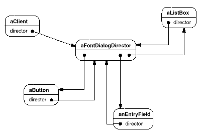
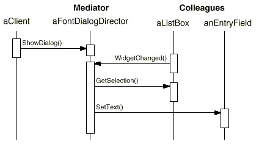
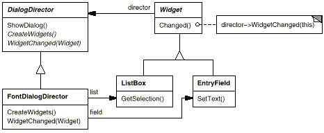
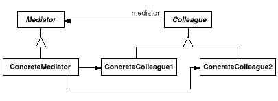
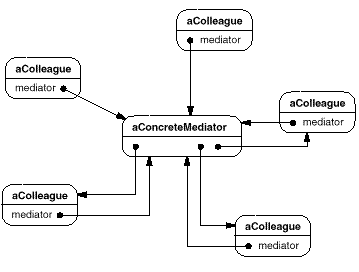
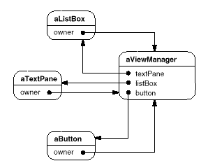

典型的なオブジェクトの構造は、次のようになるだろう。


class DialogDirector {
public:
virtual ~DialogDirector();
virtual void ShowDialog();
virtual void WidgetChanged(Widget*) = 0;
protected:
DialogDirector();
virtual void CreateWidgets() = 0;
};
class Widget {
public:
Widget(DialogDirector*);
virtual void Changed();
virtual void HandleMouse(MouseEvent& event);
// ...
private:
DialogDirector* _director;
};
void Widget::Changed () {
_director->WidgetChanged(this);
}
class ListBox : public Widget {
public:
ListBox(DialogDirector*);
virtual const char* GetSelection();
virtual void SetList(List<char*>* listItems);
virtual void HandleMouse(MouseEvent& event);
// ...
};
class EntryField : public Widget {
public:
EntryField(DialogDirector*);
virtual void SetText(const char* text);
virtual const char* GetText();
virtual void HandleMouse(MouseEvent& event);
// ...
};
class Button : public Widget {
public:
Button(DialogDirector*);
virtual void SetText(const char* text);
virtual void HandleMouse(MouseEvent& event);
// ...
};
void Button::HandleMouse (MouseEvent& event) {
// ...
Changed();
}
class FontDialogDirector : public DialogDirector {
public:
FontDialogDirector();
virtual ~FontDialogDirector();
virtual void WidgetChanged(Widget*);
protected:
virtual void CreateWidgets();
private:
Button* _ok;
Button* _cancel;
ListBox* _fontList;
EntryField* _fontName;
};
void FontDialogDirector::CreateWidgets () {
_ok = new Button(this);
_cancel = new Button(this);
_fontList = new ListBox(this);
_fontName = new EntryField(this);
// fill the listBox with the available font names
// assemble the widgets in the dialog
}
void FontDialogDirector::WidgetChanged (
Widget* theChangedWidget
) {
if (theChangedWidget == _fontList) {
_fontName->SetText(_fontList->GetSelection());
} else if (theChangedWidget == _ok) {
// apply font change and dismiss dialog
// ...
} else if (theChangedWidget == _cancel) {
// dismiss dialog
}
}


self addSubpane: (ListPane new
paneName: 'myListPane';
owner: self;
when: #select perform: #listSelect:).